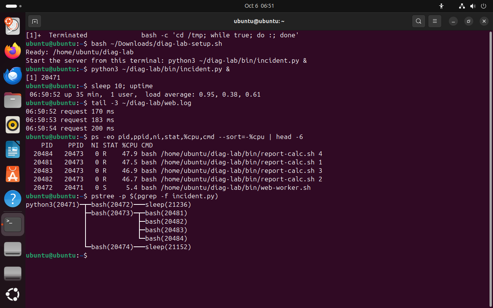
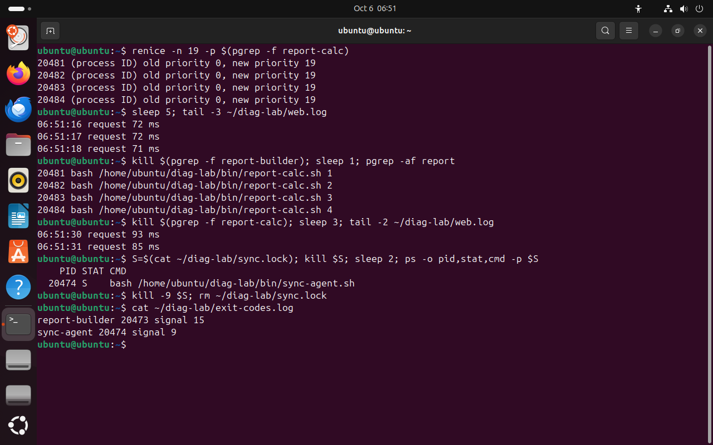
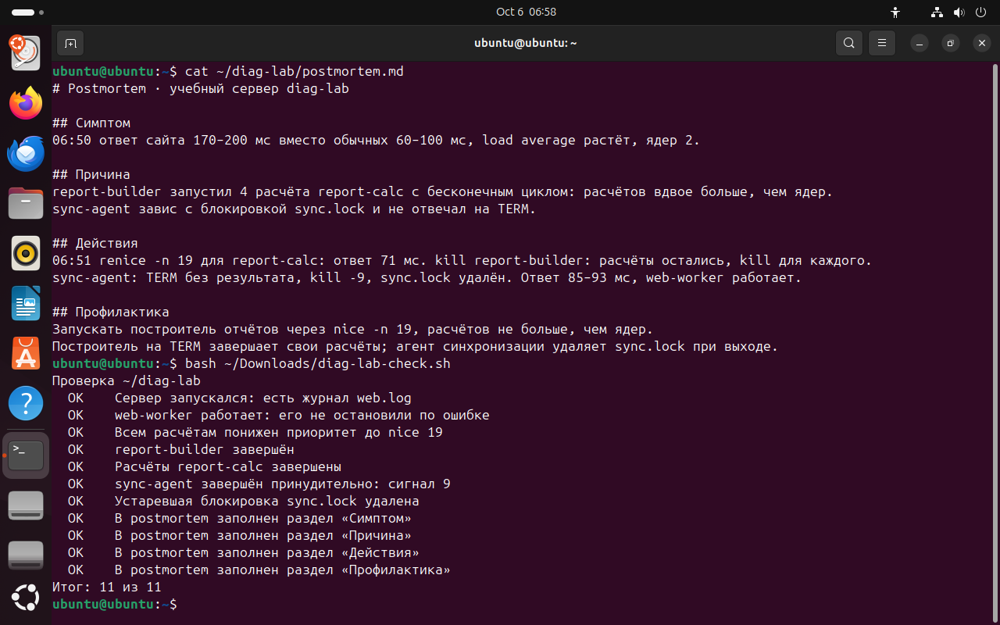

Часть 7 из 7
Практическая работа № 5 · Диагностика процесса
В этой части на учебном сервере случится инцидент: сайт отвечает в несколько раз медленнее. Нужно найти причину, вернуть сайту скорость, не остановив его, и написать postmortem.
7.1 Учебный сервер
Скрипт diag-lab-setup.sh создаёт каталог ~/diag-lab со службами учебного сервера, диспетчером incident.py и заготовкой postmortem.md. Диспетчер вы запускаете сами, в фоне из своего терминала.
- web-worker.sh
учебный сайт: раз в секунду обрабатывает запрос и пишет время ответа в web.log
нужен, не трогать - report-builder.sh
построитель отчётов: запускает по два расчёта на каждое ядро и ждёт их
родитель расчётов - report-calc.sh
расчёты отчёта: из-за ошибки считают без конца и пишут в report.log свой nice
занимают процессор - sync-agent.sh
агент синхронизации: записал свой PID в sync.lock и завис; на TERM не реагирует
завис - incident.py
диспетчер сервера: запускает службы и записывает в exit-codes.log, как завершилась каждая
родитель служб
Обычное время ответа сайта — 60–100 мс. После запуска сервера оно вырастает в 2–3 раза: расчётов вдвое больше, чем ядер, и сайт получает процессор только в свою очередь.
Сайт web-worker должен работать всё время. Его нельзя останавливать и нельзя понижать ему приоритет: это рабочая служба, ради которой и чинят сервер.
7.2 Задания
Задания выполняются по порядку в одном окне терминала. По ходу работы записывайте команды и время: они понадобятся в postmortem.
| № | Задание | Подсказка |
|---|---|---|
| 1 | Создайте набор командой bash ~/Downloads/diag-lab-setup.sh и запустите сервер в фоне из того же терминала: python3 ~/diag-lab/bin/incident.py &. Подождите 10 секунд. | знак & в конце |
| 2 | Запишите симптом: нагрузку и последние строки журнала web.log со временем ответа. Сравните время ответа с обычным — 60–100 мс. | uptime, tail |
| 3 | Найдите процессы, которые занимают процессор, их родителя и всё дерево сервера. | ps -eo … --sort=-%cpu, pstree -p |
| 4 | Понизьте приоритет всем расчётам report-calc до 19 и убедитесь по журналу, что время ответа уменьшилось. | renice -n 19 -p $(pgrep -f report-calc) |
| 5 | Отчёт так и не построится: в расчёте ошибка. Завершите report-builder сигналом TERM и проверьте, остались ли расчёты. Завершите оставшиеся. | kill, pgrep -af report |
| 6 | Агент синхронизации завис: в sync.log одна строка, новых нет. Его PID записан в sync.lock. Пошлите ему TERM, убедитесь, что он жив, завершите принудительно и удалите устаревший sync.lock. | cat, kill, kill -9, rm |
| 7 | Проверьте результат: время ответа в web.log вернулось к обычному, web-worker работает, в exit-codes.log записаны сигналы. | tail, cat |
| 8 | Заполните ~/diag-lab/postmortem.md: симптом, причина, действия, профилактика. | текстовый редактор nano |
| 9 | Запустите проверку bash ~/Downloads/diag-lab-check.sh и добейтесь результата 11 из 11. | скрипт в материалах занятия |
bash ~/Downloads/diag-lab-setup.sh# создать наборчто делает
Что делает команда. Создаёт каталог ~/diag-lab со службами учебного сервера, диспетчером и заготовкой postmortem.
По частям:
bash- запустить оболочку bash
~/Downloads/diag-lab-setup.sh- файл скрипта (путь от домашнего каталога)
python3 ~/diag-lab/bin/incident.py &# запустить серверчто делает
Что делает команда. Запускает диспетчер учебного сервера в фоне из текущего терминала.
По частям:
python3- запустить интерпретатор Python
~/diag-lab/bin/incident.py- файл программы (путь от домашнего каталога)
&- запустить команду слева в фоне и сразу продолжить
sleep 10; uptime# нагрузкачто делает
Что делает команда. Ждёт 10 секунд и печатает нагрузку.
По частям:
sleep- ничего не делать указанное число секунд
10- сколько секунд
;- разделитель: выполнить следующую команду после этой
uptime- напечатать время работы системы и нагрузку
tail -3 ~/diag-lab/web.log# время ответа сайтачто делает
Что делает команда. Выводит три последние строки журнала сайта со временем ответа.
По частям:
tail- оставить только последние строки
-3- сколько последних строк оставить: 3
~/diag-lab/web.log- какой файл (путь от домашнего каталога)
ps -eo pid,ppid,ni,stat,%cpu,cmd --sort=-%cpu | head -6# кто занял процессорчто делает
Что делает команда. Выводит все процессы, отсортированные по загрузке процессора, и оставляет заголовок и пять первых строк.
По частям:
ps- вывести сведения о процессах
-eo pid,ppid,ni,stat,%cpu,cmd- -e — все процессы системы; -o — выводить столбцы pid,ppid,ni,stat,%cpu,cmd
--sort=-%cpu- сортировать по загрузке процессора, минус — по убыванию
|- передать вывод левой команды на вход следующей
head- оставить только первые строки
-6- сколько первых строк оставить: 6
pstree -p $(pgrep -f incident.py)# дерево серверачто делает
Что делает команда. Рисует дерево процессов учебного сервера от диспетчера incident.py.
По частям:
pstree- нарисовать дерево процессов
-p- показывать PID рядом с именем
$(pgrep -f incident.py)- подставить вывод команды pgrep -f incident.py
- 1нагрузка растёт
- 2ответ 170–200 мс вместо 60–100
- 3четыре report-calc делят два ядра
- 4report-builder 20473 — общий родитель расчётов
- 5incident.py — диспетчер сервера
- 6sync-agent 20474 спит


Весь снимок ↗Нагрузка, время ответа сайта, самые загруженные процессы и дерево сервера.
Что показывает снимок. Сайт отвечает за 170–200 мс. Первые четыре строки ps — report-calc почти по 47 % каждый, у всех PPID 20473. Дерево показывает, что 20473 — потомок диспетчера python3 20471, то есть report-builder. sync-agent 20474 спит в sleep.
Где это пригодится. Сравните свой список с эталоном: расчётов report-calc у вас вдвое больше, чем ядер, у всех общий родитель.
renice -n 19 -p $(pgrep -f report-calc)# уступить процессор сайтучто делает
Что делает команда. Ставит nice 19 всем процессам report-calc.
По частям:
renice- изменить поправку приоритета работающего процесса
-n 19- новое значение nice: 19
-p $(pgrep -f report-calc)- какой процесс: PID из вывода «pgrep -f report-calc»
sleep 5; tail -3 ~/diag-lab/web.log# время ответачто делает
Что делает команда. Ждёт пять секунд и выводит три последние строки журнала сайта.
По частям:
sleep- ничего не делать указанное число секунд
5- сколько секунд
;- разделитель: выполнить следующую команду после этой
tail- оставить только последние строки
-3- сколько последних строк оставить: 3
~/diag-lab/web.log- какой файл (путь от домашнего каталога)
kill $(pgrep -f report-builder); sleep 1; pgrep -af report# завершить построительчто делает
Что делает команда. Посылает TERM построителю отчётов, ждёт секунду и ищет оставшиеся процессы со словом report.
По частям:
kill- послать процессу сигнал
$(pgrep -f report-builder)- подставить вывод команды pgrep -f report-builder
;- разделитель: выполнить следующую команду после этой
sleep- ничего не делать указанное число секунд
1- сколько секунд
;- разделитель: выполнить следующую команду после этой
pgrep- найти процессы и вывести их PID
-af- -a — вывести командную строку, -f — искать по всей командной строке
report- образец
kill $(pgrep -f report-calc); sleep 3; tail -2 ~/diag-lab/web.log# завершить расчётычто делает
Что делает команда. Посылает TERM всем расчётам, ждёт три секунды и выводит две последние строки журнала сайта.
По частям:
kill- послать процессу сигнал
$(pgrep -f report-calc)- подставить вывод команды pgrep -f report-calc
;- разделитель: выполнить следующую команду после этой
sleep- ничего не делать указанное число секунд
3- сколько секунд
;- разделитель: выполнить следующую команду после этой
tail- оставить только последние строки
-2- сколько последних строк оставить: 2
~/diag-lab/web.log- какой файл (путь от домашнего каталога)
S=$(cat ~/diag-lab/sync.lock); kill $S; sleep 2; ps -o pid,stat,cmd -p $S# TERM зависшему агентучто делает
Что делает команда. Берёт PID агента из файла блокировки, посылает ему TERM, ждёт две секунды и проверяет, жив ли процесс.
По частям:
S=$( … )- сохранить в переменную S вывод команды в скобках
cat- вывести содержимое файла
~/diag-lab/sync.lock- какой файл (путь от домашнего каталога)
;- разделитель: выполнить следующую команду после этой
kill- послать процессу сигнал
$S- какому процессу, значение переменной S: сохранённый PID
;- разделитель: выполнить следующую команду после этой
sleep- ничего не делать указанное число секунд
2- сколько секунд
;- разделитель: выполнить следующую команду после этой
ps- вывести сведения о процессах
-o pid,stat,cmd- выводить столбцы pid,stat,cmd
-p $S- выбрать процесс: PID из переменной S
kill -9 $S; rm ~/diag-lab/sync.lock# принудительно и убрать блокировкучто делает
Что делает команда. Посылает агенту KILL и удаляет оставшийся после него файл блокировки.
По частям:
kill- послать процессу сигнал
-9- послать сигнал 9 — KILL: завершить немедленно
$S- какому процессу, значение переменной S: сохранённый PID
;- разделитель: выполнить следующую команду после этой
rm- удалить файл
~/diag-lab/sync.lock- какой файл (путь от домашнего каталога)
cat ~/diag-lab/exit-codes.log# как завершились службычто делает
Что делает команда. Выводит журнал диспетчера: каким сигналом завершилась каждая служба.
По частям:
cat- вывести содержимое файла
~/diag-lab/exit-codes.log- какой файл (путь от домашнего каталога)
- 1nice расчётов: 0 → 19
- 2ответ упал до 71–72 мс
- 3построитель завершён, расчёты работают
- 4без расчётов: 85–93 мс
- 5S: sync-agent пережил TERM
- 6журнал: построитель — TERM (15), агент — KILL (9)


Весь снимок ↗renice, завершение построителя и расчётов, принудительное завершение агента, журнал диспетчера.
Что показывает снимок. После renice все расчёты получили nice 19, и ответ сайта упал до 71–72 мс. Завершённый report-builder оставил четыре расчёта работать, их пришлось завершить отдельно. sync-agent пережил TERM в состоянии S и снят KILL. Журнал диспетчера: построитель — сигнал 15, агент — сигнал 9.
Где это пригодится. Порядок «смягчить, затем устранить» вернул скорость сайту ещё до того, как решено, что делать с расчётами.
7.3 Postmortem и проверка
Postmortem пишется в ~/diag-lab/postmortem.md: в файле уже есть четыре заголовка. Откройте его в редакторе nano, под каждым заголовком напишите несколько строк, сохраните Ctrl+O и выйдите Ctrl+X.
| Раздел | Что должно быть |
|---|---|
| Симптом | время ответа сайта до и во время инцидента, нагрузка по uptime, время |
| Причина | какие процессы заняли процессор и почему их стало больше, чем ядер; что случилось с sync-agent |
| Действия | команды по порядку с результатом каждой |
| Профилактика | две-три проверяемые меры: например, запускать отчёты с nice 19, завершать расчёты вместе с построителем |
Скрипт diag-lab-check.sh ничего не меняет, только проверяет. Сайт должен работать, расчёты — получить nice 19 и быть завершены, sync-agent — снят сигналом 9, блокировка удалена, в postmortem заполнены все четыре раздела.
cat ~/diag-lab/postmortem.md# отчёт об инцидентечто делает
Что делает команда. Выводит заполненный postmortem.
По частям:
cat- вывести содержимое файла
~/diag-lab/postmortem.md- какой файл (путь от домашнего каталога)
bash ~/Downloads/diag-lab-check.sh# проверка по 11 пунктамчто делает
Что делает команда. Запускает проверку: скрипт смотрит процессы и файлы учебного сервера и выводит OK или НЕТ по каждому пункту.
По частям:
bash- запустить оболочку bash
~/Downloads/diag-lab-check.sh- файл скрипта (путь от домашнего каталога)


Весь снимок ↗Postmortem эталонного решения и результат проверки.
Что показывает снимок. В postmortem четыре раздела с временем, числами и командами. Скрипт проверил сайт, приоритет и завершение расчётов, сигнал агента, блокировку и разделы postmortem и вывел «Итог: 11 из 11».
Где это пригодится. Если пункт выводит НЕТ, найдите по его названию задание. Пункт про nice 19 требует понизить приоритет всем расчётам до их завершения. Если расчёты уже завершены, запустите набор заново: setup создаёт каталог с нуля.
Итоги части 7
- Симптом записывают числом: время ответа, нагрузка, время суток.
- Нужную службу не трогают: приоритет понижают процессам, которые отбирают у неё процессор.
- Завершение родителя не завершает потомков: их нужно найти и завершить отдельно.
- После KILL за процессом остаются блокировки и временные файлы — их убирают вручную.
В отчётСнимки поиска, исправления и проверки 11 из 11, postmortem.md.
Что сдать
Отчёт report.md с десятью снимками экрана по шаблону из материалов и postmortem.md практической работы. Номера PID и время ответа в вашей системе будут отличаться от снимков урока.
| Снимок | Тема | Что написать под снимком |
|---|---|---|
01-load.png | Нагрузка | Сравните load average с числом ядер до и после запуска yes. |
02-top.png | top | Подпишите нагрузку, долю us и самый загруженный процесс. |
03-htop.png | htop | Что показывают полосы ядер и памяти. |
04-find.png | Поиск виновника | PID виновника, кто его запустил и где он работает. |
05-nice.png | nice и renice | Почему ядро разделилось 90 на 10 и почему renice отказал. |
06-time.png | time | Соотношение real, user и sys для каждой команды. |
07-memory.png | Память | Сколько памяти занял процесс и вернулась ли она. |
08-lab-find.png | Инцидент: симптом | Симптом в числах и виновники. |
09-lab-fix.png | Инцидент: исправление | Что сделано и как изменилось время ответа. |
10-lab-check.png | Проверка | Итог проверки; какие пункты потребовали исправления. |
Критерии оценки · 10 баллов
- 2нагрузка, top и htop: числа на снимках прочитаны и объяснены — части 1–2
- 2поиск виновника: ps с сортировкой, предки, каталог — часть 3
- 2nice, renice и time: доли процессора и три времени объяснены — части 4–5
- 2практическая работа: инцидент устранён, проверка 11 из 11
- 2postmortem: четыре раздела по фактам, проверяемая профилактика
По каждому пункту: 2 балла — результат получен и объяснён, 1 — результат без объяснения, 0 — результата нет или объяснение неверное.
Перед сдачей
Отмечено 0 из 5
Домашнее задание · занятие 8
Максим Николаевич не хочет задавать домашнее задание. Но очень хочет
Свой инцидент
Устройте на своей виртуальной машине инцидент и разберите его по порядку действий из части 6. Виновника выберите сами: процесс, который занимает процессор, процесс, который занимает память, или зависший процесс, который не реагирует на TERM.
- Снимите симптом до инцидента и во время него:
uptime,free -hилиtop -b -n 1. - Найдите виновника командами из части 3, смягчите или устраните его и повторите измерение.
- Измерьте командой
/usr/bin/time -f "%e s, %M KB"время и пиковую память любой программы на ваш выбор и объясните результат. - Напишите
postmortem.mdиз четырёх разделов: симптом, причина, действия, профилактика.
Порядок сдачи
- Файлыпапка
lesson_06в своём репозитории по шаблону os-environments-template:report.md, снимки вscreenshots/,postmortem.mdпрактической работы,incident.mdсо своим инцидентом. - Ветка и PRветка
hw-06, Pull Request в своюmain. - Срокдо начала следующего занятия.
- Критериипрактическая работа — 10 баллов по критериям выше; домашнее задание принимается, если симптом измерен до и после, виновник найден командами и postmortem содержит все четыре раздела.
- ИИнейросеть можно попросить причесать формулировки и оформить таблицы в
.md— я сам так делаю всегда, поэтому и вам запрещать не буду. Команды и вывод — только из вашей виртуальной машины.